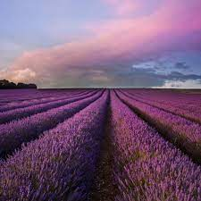
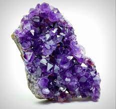

Violet
Interesting facts about the color Violet
- Violet is aka Purple
- Originally, the color purple came from a dye made from the mucus glands
of a tropical sea snail known as the murex.
- Purple is the hardest color for the eye to distinguish.
- Samuel L. Jackson said that he would only play Mace Windu in
Star Wars if he had a purple lightsaber!
You know you want to know more about Violet!

